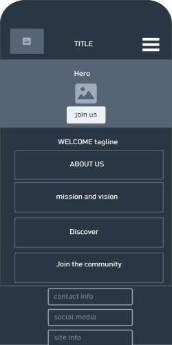
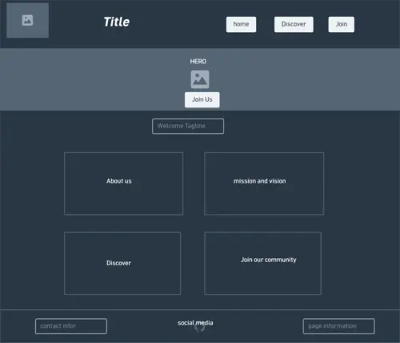

Site Name
Read and Rise
This name was selected because it conveys the idea of personal growth and empowerment through reading. It emphasizes building meaningful reading habits and rising to new levels of knowledge and community engagement.
Site Purpose
The purpose of this site is to create a global community that encourages people to explore books and build meaningful reading habits. It will host reading challenges, book reviews, provide goal-setting tools, offer book recommendations, and highlight a "Reader of the Month."
Scenarios
- How do I improve my reading habits?
- Where can I find book recommendations tailored to my interests?
Color Scheme
- Deep Navy #183B56: Used for the header, headings, and major accents.
- Warm Cream #F8F4E8: Used as the main page background.
- Warm Gold #D4A72C: Used for highlights, borders, buttons, and calls to action.
- Sage Green #6B8E6E: Used as a secondary accent representing growth and learning.
- Dark Brown #2E2925: Used for body text.
Typography
- Merriweather: Used for all text including headings and body. This serif font provides a classic, readable style that suits the literary theme of the site.

